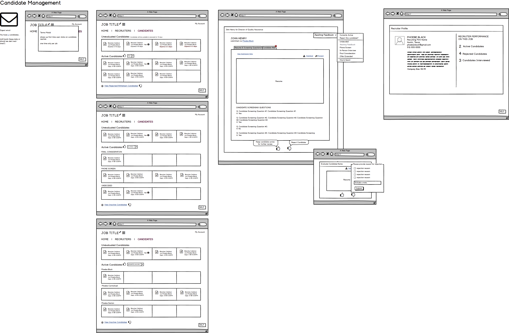
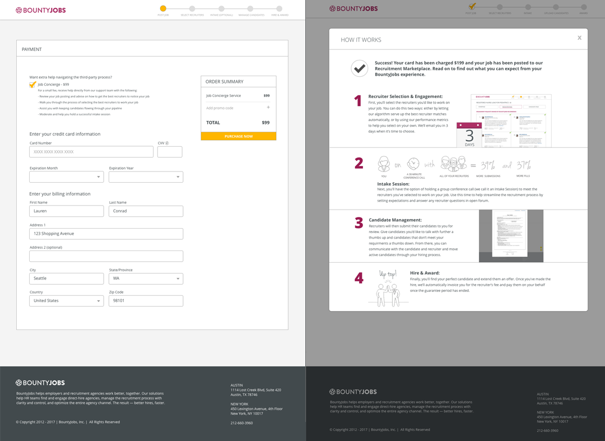
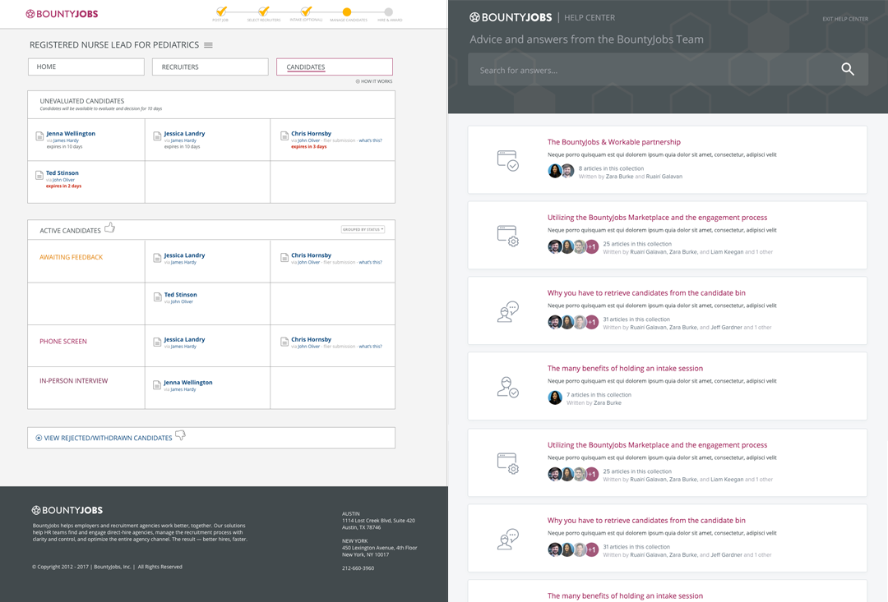

Portfolio
Building a new product line

Executive summary
THE ASK
Create a streamlined version of BountyJob's enterprise-level subscription-based recruitment platform. The product we ultimately built and released is called Connect Direct and allows employers to post a single job to the BountyJobs' recruitment marketplace for 90 days, giving employers access to thousands of third-party recruiters who can quickly fill critical roles. I, as the company's UX/UI designer, spearheaded design (functional and visual), as well as content direction for all user touchpoints.
THE TEAM

THE CONSTRAINTS
The first constraint was an agressively compressed timeline. Product management wanted this product on the market in 2 months. Constraint number two, they wanted this product to have a no-touch support model, which would be a brand new philosophy for the company. The third constraint, which relates to the aggressive timeline, was my inability to convince product management to take the time to do adequate user research. I argued that this product was geared toward a brand new user type whose motivations, hiring pain points, contingent search knowledge and general personality makeup we knew nothing about. Product management argued that this user was close enough to our existing enterprise employer and the importance of taking the prodcut to market quickly trumped the need for user research. I was given 2 weeks to present my designs.
Research
No user research?!?!?! What? Okay. Breathe. What can I do instead?
PERSONAS
Even though I wasn't convinced the user for this product resembled a large enterprise human resources generalist, I did base designs on the exisitng personas I had in place for employers and recruiters.
Ask questions, questions and more questions
I asked product management, I asked customer service, I asked the CEO, I asked marketing, I asked engineering, I asked my cat. I got good answers to some of them and no answers to others, but at least I had a starting point. Some examples:
- What problem are we aiming to solve? And who are we solving it for?
- What do you know for sure about this user? What common problem do they face?
- What are the assumptions we're making about this user and their need for this product?
- What does the product need to do?
- What are the goals we need to achieve from this project? How will we measure success?
EVALUATION
Break out the post-its and let the card sorting begin! I performed an audit of our exisiting enterprise-level product to break down each user action and start to determine which ones were vital, which ones could be eliminated and which ones would need improvement. Then, I added in the new product requirements. The result of this exercise was the general architecture/structure for the product, which was quickly validated with product and engineering.

Design
USERFLOWS
Next, I created (and iterated) userflows to drive multiple discussions with engineering and stakeholders to move the user experience forward and get one step closer to the final product. I had to be agressively pragmatic to balance the best user experience I could design with what could realistically be built within the specified 2-month timeframe (though, fyi, the whole project from ideation to launch ended up taking about 3 months).
WIREFRAMES & MOCKUPS
Wireframes and more detail surrounding user interactions and product screens came next. I typically build out one overall wireframe of every screen and interaction so that the team can understand the entire user experience holistically. In this case, I spent more time developing extremely detailed userflows, and then built out sets of wireframes per each architectural section of the product to speed both the design and development process. Once we landed on the final solution for a section, I then developed the corresponding high-fidelity mockups so that we could break the development of the product up into sprints with greater ease.



PROTOTYPE
I uploaded the finalized mockups into InVision, linked up the appropriate hotspots and used the collaboration feature of InVision to gather feedback from users, stakeholders and executives. This feedback loop led to a few tweaks to the userflow, most significantly moving the marketplace purchase step up to occur before finalizing the posting.
See the full prototype here
Measurement & iteration
The product was launched shortly before the SXSW interactive conference. Marketing and I used the conference to get the product in front of users and gather initial feedback on usability and messaging. Additionally, prior to marketing the product on a large scale, we ran a Friends & Family promo. Using Smartlook's flight recorder, I was able to gather valuable insights into real usage of the product and at what points users were having issues understanding the product. I found that users struggled with:
- The $199 marketplace access fee versus the recruiter fee because this audience was unfamiliar with contingent recruiting
- The long post form, specifically around salaries and recruiter's fees, resulting in a high abandoment rate
- The lack of direction/action to take when users did successfully post a job and landed on their job's home page. After posting a job, there is nothing for a user to do for 3 days until it is time to select recruiters
Prioritizing these issues, I proposed the following changes to the user flow to better address contingent search education, make the post form easier to interact with and created messaging on the home page to set user expectations. These changes were implemented into the product approximately 6 months after launch and increased job posting volume by 28%.